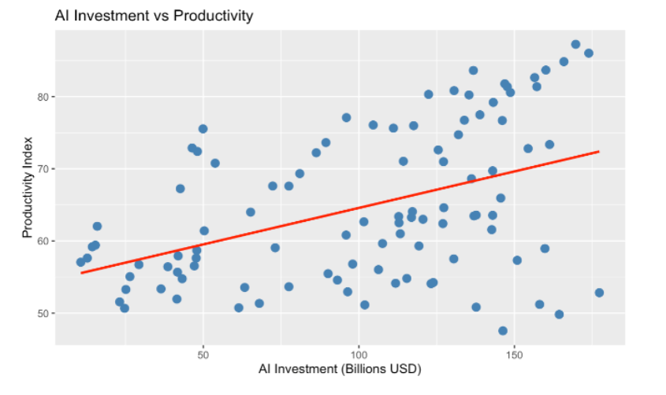
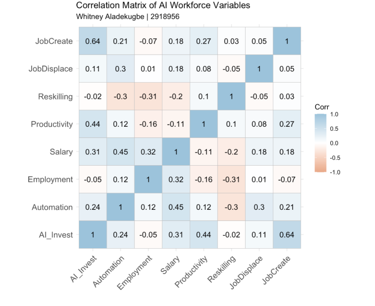
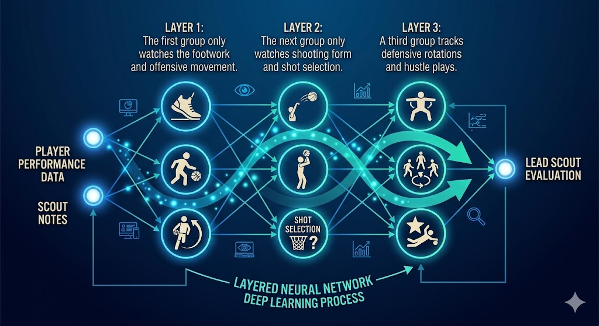
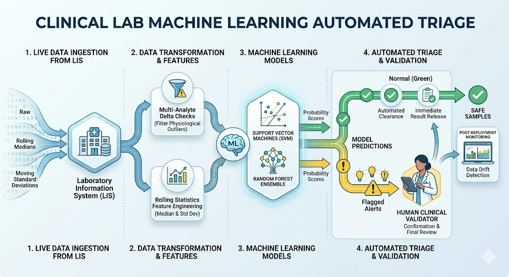
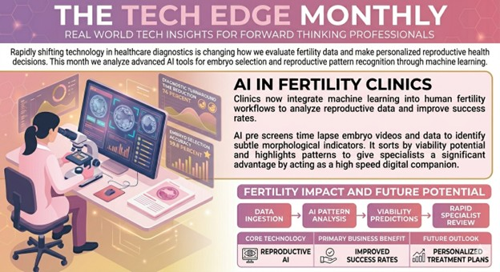
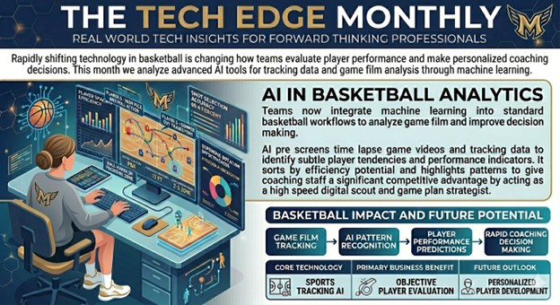
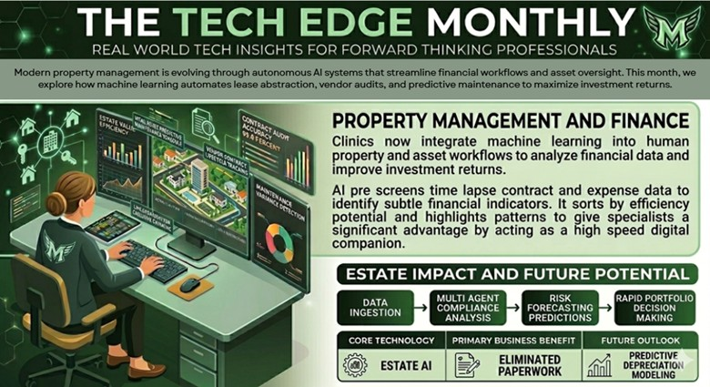

Professional Profile
About Me
I am a professional with over six years of experience in the biomedical laboratory field where I have specialized in quality management and data integrity. My background in healthcare and science taught me the importance of precision and factual consistency when analyzing complex systems. Whether I am managing quality for a startup company or conducting detailed laboratory testing I rely on a structured approach to solve problems and improve processes.
My interest in AI data analytics stems from a passion for using technology to solve information overload and improve strategic decision making. I enjoy taking raw data and converting it into clear game plans that can be applied to any industry. By combining my analytical foundation from the lab with advanced AI techniques I create tools that provide precise insights and more efficient workflows. I am a lifelong learner who values diverse perspectives and I am dedicated to using data to find the truth behind the numbers in any professional environment.
Education
MS in AI Data Analytics | Indiana Wesleyan University | Anticipated 2027
MA in Sport Leadership | Indiana Wesleyan University | 2025
BS in Human Biology | University of Indianapolis | 2019
Professional Experience
Over six years of professional experience in the biomedical and clinical laboratory fields focusing on quality management and data integrity.
- Medical Lab Technician and Scientist
- Specialization in Biomedical Quality Management
- Experience in Clinical Startup Environments
- Technical Basketball Scout and Coach
Artifact 1: Basketball Player Analysis AI Chatbot
Master’s Degree Artifact 1 | AI Lab
Project Narrative and Goal
I am heavily involved in basketball coaching at the high school and college level and I wanted to solve the information overload in scouting. This project is a digital twin of my scouting reports and methodology. This is an AI analyst that turns raw data into actual game plans.
The Breakthrough
The biggest challenge was shifting the AI from a trainer mindset to a scout mindset. Initially even when I asked it to scout an opponent it would suggest ways for them to improve. I solved this by engineering a dual mode system with strict instructional triggers.
It took some trial and error with the instructions and a few nuclear updates to the logic but it now switches gears perfectly. This process allowed me to use my technical and conceptual skills to create a tool that makes the scouting process faster and more precise.
Technical Implementation
Platform: Chatbase LLM Integration
Logic Calibration: Grounded the model in my proprietary scouting methodology with a low temperature setting to prioritize accuracy and factual consistency.
Instructional Architecture: Engineered a Dual Mode System
- Keyword SCOUT triggers an aggressive tactical mode to hunt for opponent weaknesses
- Keyword AUDIT triggers an internal focus on player development and training
System Previews
Scout Mode Tactical Analysis Logic

Audit Mode Player Development Focus

Ready to see the logic in action?
Interact with the Basketball AI ChatbotArtifact 2 Global AI Workforce and Automation Analysis
Master’s Degree Artifact 2 | DTAN-500 Data Visualization Group Project
Project Overview and Team Context
This executive analysis evaluated international AI adoption, workforce reskilling, and market displacement across 20 countries using five years of data (2015–2025). Framed for executive leadership at OmniVision Corporation, our four person team translated complex data models into a structured narrative driven report.
My Specific Technical Contributions
- Data Table Development and Modeling: Engineered Table 2 AI Investment, Automation Rate, and Reskilling Investment (2021–2025) to benchmark global financial metrics against automation adoption.
- Data Analysis and Visual Synthesis: Authored analytical commentary for data tables, breaking down how top investing nations balance automation with workforce reskilling.
- Executive Narrative and Strategy: Co authored the Introduction, Executive Summary, Conclusions, and strategic Recommendations outlining organizational leadership priorities in the AI era.
- Data Pipeline and Research: Sourced core Kaggle data tabs, contributed annotated academic research sources, and co led raw dataset cleaning and data type formatting.
Key Findings and Visual Evidence

Figure 1 Scatterplot demonstrating positive correlation between national AI investment and overall productivity index

Figure 2 Heatmap evaluating key workforce variables, including job creation, displacement, and reskilling investment
Executive Summary Takeaways
- Investment Matters, But Direction Is Key: AI investment shows a strong positive correlation with job creation (0.64) and productivity (0.44).
- The Efficiency Paradox: Nations that automate rapidly without aggressive workforce reskilling experience net negative job growth.
- Strategic Recommendation: For long term growth, organizations must pair technology investments directly with employee upskilling programs to maximize productivity gains.
Tools used R-Studio, Excel, and Kaggle Datasets.
Artifact 3: AI Leadership & Neural Network Analogies
Master’s Degree Artifact 3 | Leadership in AI
The Human Side of AI Integration
Leadership thrives when communication is adaptable and used as a path to motivate and direct individuals toward a common goal. For successful AI integration, leadership must bridge the gap between an overview vision and the everyday work of the team.
Conceptualizing Neural Networks: The Scouting Analogy
A simple way to understand a neural network is to think of it like a scouting department trying to evaluate a player. You have different scouts looking at specific details:
- Layer 1: The first group only watches the footwork and offensive movement.
- Layer 2: The next group only watches shooting form and shot selection.
- Layer 3: A third group tracks defensive rotations and hustle plays.
Neural Network Architecture: The "Scouting" Hierarchy

These scouts pass their individual notes up to the lead scout who combines all those small details to decide if the player is a good fit for the team.
Tools used: Gemini and Grammarly.
Artifact 4: Leadership and Navigating Human Bias
Master’s Degree Artifact 4 | Leadership in AI
Personal Value Statement
In the clinical lab and in basketball scouting I recognize how human bias can stand in the way of leading with peace and joy. Reminding myself of my commitment to high standards makes me want to lead differently. I believe that fostering an environment of awareness and empathy is essential to fulfilling my purpose. My core value is to promote a high level culture and environment along with inclusivity where every individual perspective is valued and every voice is heard.
Fostering Awareness and Education
I will conduct regular workshops tailored to the needs of my team to help us recognize our own blind spots. I want to encourage continuous learning through resources that highlight diverse experiences. Sometimes a simple reminder is necessary to ensure we are looking at the world with fresh eyes. By providing materials that show different viewpoints I can help my team and my players build stronger relationships.
Strategies to Address Human Bias
Implement Inclusive Practices
I will build diverse teams to bring multiple viewpoints into every decision. This diversity helps us identify biases that may not be apparent in a group where everyone thinks the same way. I will foster an inclusive culture by actively listening to all team members and ensuring that everyone has an opportunity to contribute.
Standardize Protocols
I will regularly audit the data tools and protocols we use to check for hidden biases. This includes using fairness metrics to ensure our results remain objective. There is nothing that should stand in the way of us fulfilling our work besides our own unwillingness to improve our methods.
Lead by Example
I will model empathy and fairness in every interaction whether I am in the clinic or on the court. I want to demonstrate a true commitment to addressing biases in my own decisions. I will promote a culture of self-reflection to create a more equitable environment for everyone.
Tools used: Gemini and Grammarly were used for text summarization, initial drafting, and editing.
Artifact 5: Clinical Laboratory Machine Learning Case Study
Master’s Degree Artifact 5 | Case Study Exploration
The Project Goal
This project looks at integrating machine learning pipelines inside a clinical laboratory to catch mistakes before results are released. The goal is to dynamically identify pre analytical sample errors like wrong blood in a tube or fluid contamination as well as catch systematic analytical drift when a massive analyzer machine loses calibration.
How It Works
The system pulls live data straight from the LIS platform and transforms raw numbers into structured features using rolling medians, moving standard deviations, and multi analyte delta checks. They use classic machine learning and advanced ensemble models like Random Forests and Support Vector Machines, validating the models with historical data and injected synthetic errors.
Real World Application
They focus heavily on sensitivity and the false alert rate to prevent severe alarm fatigue for the laboratory staff. The model acts as an automated triage tool that clears normal samples and sends unusual flags to a human clinical validator. This puts actual laboratory logic into the data pipeline, though the heavy reliance on simulated error data means the model might struggle with chaotic real world data.
My Portfolio Takeaway
I would apply this automated triage concept in the endocrinology laboratory down the road since we use the LIS platform. It keeps things safe by helping human experts rather than acting as an isolated decision maker. However I would avoid relying only on synthetic shifts. For future projects I want to build anomaly detection models trained on completely clean true clinical baselines so the system can spot unexpected messy variations much better.
Workflow Visualization
Automated Triage Machine Learning Pipeline

The image shows the automated triage workflow diagram that I designed to visualize how the machine learning pipeline integrates with human clinical validators in the laboratory to catch mistakes.
Tools used: Gemini and Grammarly were used for text summarization, initial drafting, and editing.
Reference: Lorde N, Mahapatra S, and Kalaria T, 2024. Machine Learning for Patient Based Real Time Quality Control Analytical and Preanalytical Error Detection in Clinical Laboratory. Diagnostics 14(16), 1808.
Artifact 6: Commercial Applications of AI & Operational Impact
Strategic Analysis: AI-Driven Operational Efficiency
This artifact examines how machine learning models move data from static logs to active, decision-making assistants across three distinct high-stakes industries.
1. Healthcare: Reproductive Medicine

Deep learning models process time-lapse imaging to analyze millions of pixel-level morphological patterns. By standardizing embryo viability and genetic normalcy predictions, platforms like AIVF and Life Whisperer provide objective insights that cut review times by over 97%.
2. Sports Analytics: Basketball Operations

Continuous computer vision pipelines ingest raw game film to classify player movement, shot selection, and rotation effectiveness. This eliminates manual film-splicing workflows, allowing coaching staffs to focus on data-backed game plans. This can cut manual study time by roughly 70%.
3. Property Management: Financial Compliance

Autonomous agents handle complex multi-entity bank reconciliations and invoice auditing. By cross-referencing vendor data against contract terms, platforms like Vic.ai and Re-Leased achieve 99% accuracy, transforming weeks of manual auditing into hours of automated oversight.
Operational Impact and Future Potential
The core benefit across all three domains is the removal of human bias and the scaling of operations without proportional staff increases. The next evolution involves moving from descriptive tracking (what happened) to predictive simulation (what will happen).
- Healthcare: Transitioning from simple viability scores to personalized patient treatment simulations.
- Sports: Running thousands of game simulations to test lineup efficacy against specific opponent habits before the game begins.
- Property Management: Using local weather patterns, wear-and-tear data, and expense histories to predict and schedule system maintenance before any failure occurs.
My Portfolio Takeaway
Whether in a fertility lab, a film room, or a corporate finance office, the pattern is consistent: AI identifies subtle, high-value indicators that the human eye misses. My focus is on designing systems that act as an "efficiency multiplier," freeing specialists to focus on high-level strategy rather than routine data management.
References:
AIVF Ltd. (2026). Next generation IVF: Clinical validation and platform efficiency metrics for the EMA™ software layer. AIVF Research.
McKinsey & Company. (2026). How agentic AI can reshape real estate's operating model. McKinsey & Company Real Estate Insights.
SportsVisio. (2026). SV Coach computer vision tracking pipeline and automated shot signature taxonomy. SportsVisio Technical Documentation.